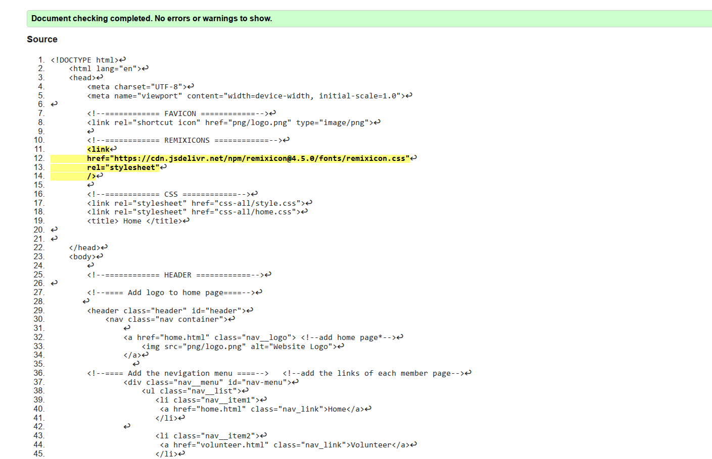
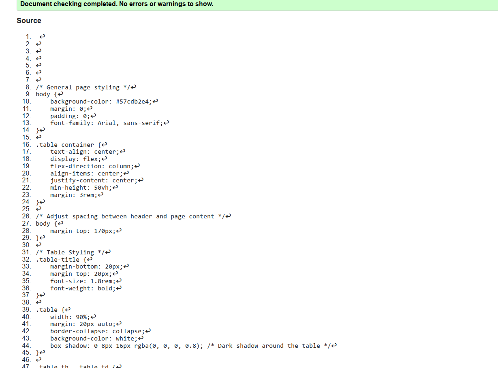
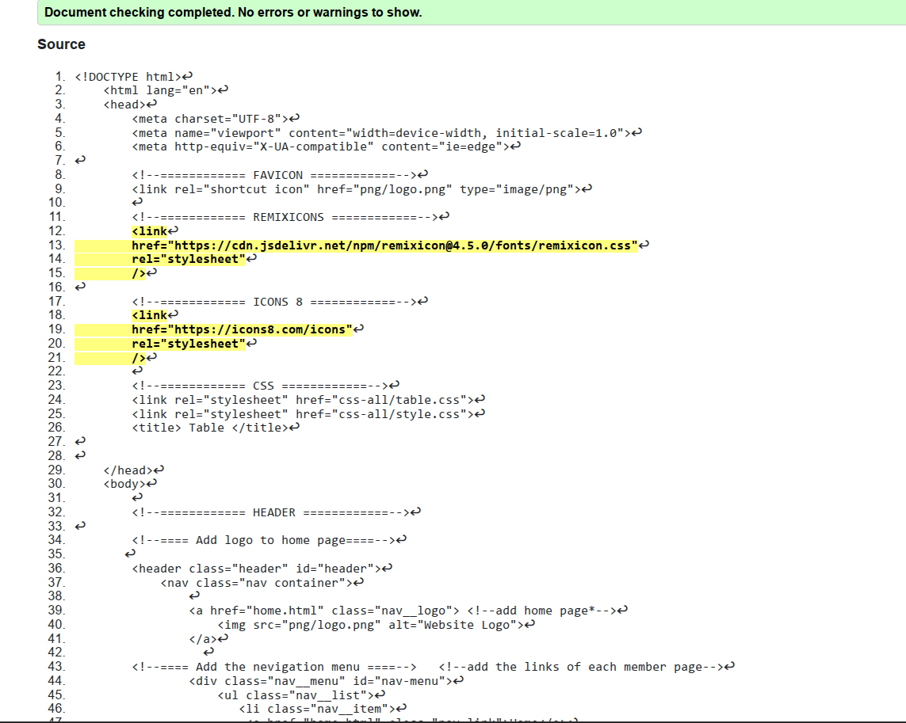
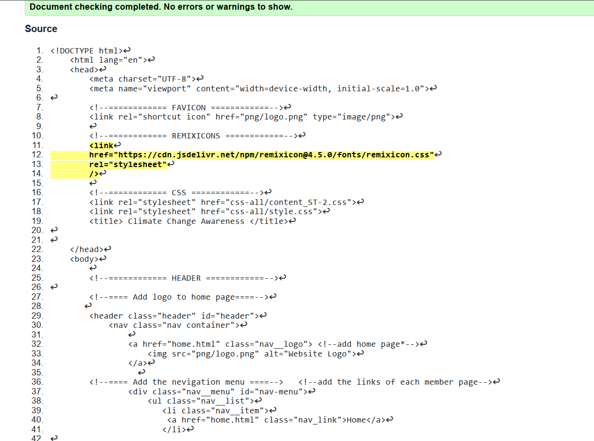
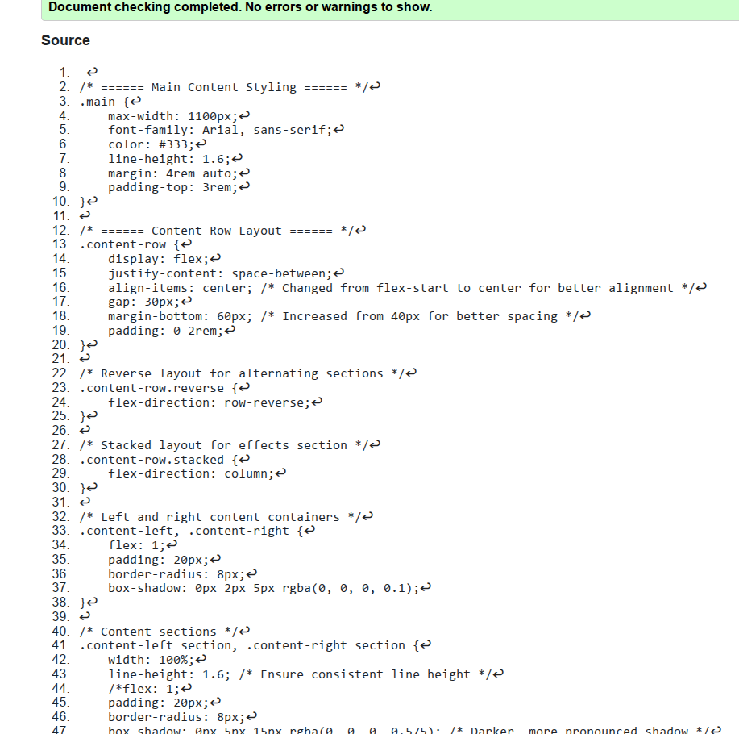

Home Page validation report
The validation report indicates that both the HTML and CSS files are error-free, confirming that the code is well-structured and adheres to best practices. The absence of warnings suggests that all linked stylesheets and external resources, including Remix Icons and custom CSS files, are correctly referenced. Additionally, the use of structured comments and organized class definitions in the CSS improves maintainability. Moving forward, user testing and cross-browser compatibility checks should be conducted to ensure consistent performance across different environments.


Table Page validation report
The validation report for the HTML and CSS files indicates that no errors or warnings were found, which suggests that the code adheres to standard web development best practices. This confirms that the structure, syntax, and styling rules are correctly implemented. The proper linking of external stylesheets and icons ensures smooth integration of design elements. Additionally, the use of semantic HTML and well-structured CSS improves readability and maintainability. Overall, this validation result reflects a successful implementation of the table page with a well-organized layout and responsive design considerations.

Content Page validation report
The validation report for the web pages I implemented confirms that there are no errors or warnings, indicating that the HTML and CSS adhere to web development standards. This successful validation reflects proper syntax, well-structured code, and adherence to best practices, ensuring smooth functionality and compatibility across different browsers. A clean and error-free implementation improves website maintainability, making future updates and modifications more efficient. Additionally, it enhances user accessibility, performance, and search engine optimization (SEO). Overall, the validation results highlight the effectiveness of the coding approach, reinforcing the reliability and professionalism of the website.

